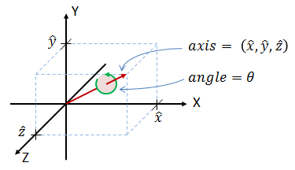

D. Rose - May, 2015
This paper provides a basic introduction to the use of quaternions in 3D rotation applications. We give a simple definition of quaternions, and show how to convert back and forth between quaternions, axis-angle representations, Euler angles, and rotation matrices. We also show how to rotate objects forward and back using quaternions, and how to concatenate several rotation operations into a single quaternion.
Strictly speaking, a quaternion is represented by four elements:
where q0, q1, q2 and q3 are real numbers, and i, j and k are mutually orthogonal imaginary unit vectors. The q0 term is referred to as the "real" component, and the remaining three terms are the "imaginary" components. In practice (and for the remainder of this paper), the imaginary notation is implied, and only the four coefficients are used to specify a quaternion, as in equation 2:
Quaternions are a complicated subject. However, in this paper we will restrict ourselves to a subset of quaternions called rotation quaternions. Rotation quaternions are a mechanism for representing rotations in three dimensions, and can be used as an alternative to rotation matrices in 3D graphics and other applications. Using them requires no understanding of complex numbers.
Rotation quaternions are closely related to the axis-angle representation of rotation. We will therefore start with an explanation of the axis-angle representation, and then show how to convert to a quaternion.

Figure 1: Any 3D rotation can be specified by an axis of rotation and a rotation angle around that axis
An axis-angle rotation can therefore be represented by four numbers as in equation 3:
where:
where:
From these equations we can see that the real term of the quaternion (q0) is completely determined by the rotation angle, and the remaining three imaginary terms (q1, q2 and q3) are just the three rotation axis vectors scaled by a common factor. One consequence of this representation is that the magnitude of a rotation quaternion (that is, the sum of the squares of all four components) is always equal to one.
Since the axis-angle and quaternion representations contain exactly the same information, it is reasonable to ask why we would bother with the less-intuitive quaternions at all? The answer is that to do anything useful with an axis-angle quantity—such as rotate a set of points that make up some 3D object—we have to perform these trigonometric operations anyway. Performing them ahead of time means that most quaternion operations can be accomplished using only multiplication/division and addition/subtraction, thus saving valuable computer cycles.
If θ is not zero, we can then find the rotation axis unit vector as follows:
There is one special case in which equation (6) will fail. A quaternion with the value q = (1,0,0,0) is known as the identity quaternion, and will produce no rotation. In this case, equation (5) will produce a rotation angle (θ) of zero, which is what we expect. However, since the axis of rotation is undefined when there is no rotation, equation (6) will generate a divide-by-zero error. Any software implementation should therefore test whether q0 equals 1.0, and if it does should set θ = 0, and (x̂, ŷ, ẑ) = (1, 0, 0).
It is worth noting that there are several ways to convert from a quaternion to axis-angle, so don't be too concerned if equations 5 and 6 don't match other sources.
Or equivalently:
Both methods work for all valid unit rotation quaternions, including the identity quaternion.
We can find the equivalent quaternion using two steps.
Step 1: Find the magnitude of each quaternion component. This leaves the sign of each component undefined:
Step 2: To resolve the signs, find the largest of q0, q1, q2, q3 and assume its sign is positive. Then compute the remaining components as shown in the table below. Taking the largest magnitude avoids division by small numbers, which would reduce numerical accuracy.
The reason the sign is ambiguous is that any given rotation has two possible quaternion representations. If one is known, the other can be found by taking the negative of all four terms. This has the effect of reversing both the rotation angle and the axis of rotation. So for all rotation quaternions, (q0, q1, q2, q3) and (−q0, −q1, −q2, −q3) produce identical rotations. To convert from a rotation matrix to a quaternion, we must arbitrarily pick one of the two possible answers as described in steps 1 and 2.
In this paper we will use the following definition of Euler angles.
This is a common convention, and most people find it the easiest to visualize. For a more thorough discussion of Euler angles, see this paper.
Given the above definition, we can convert from Euler angles to Quaternion as follows:
where:
Equations 10a-d work for all values of Euler angle, including the condition of gimbal lock, where the pitch angle equals +90° or −90°.
This is the dreaded "gimbal lock." It occurs because, at a pitch angle of +90° and −90°, the yaw and roll axes of rotation are aligned with each other in the world coordinate system, and therefore produce the same effect. This means there is no unique solution: any orientation can be described using an infinite number of yaw and roll angle combinations.
To handle the gimbal lock condition, we must first use equation 11b to determine whether the pitch angle is +π/2 or −π/2 radians. Then we set either roll or yaw to zero and solve for the other as follows:
Note that while Euler angles are susceptible to gimbal lock, quaternions and rotation matrices are not.
Is defined as:
Quaternion multiplication is associative, but (except for some special cases) is not commutative. Therefore if a, b and c are quaternions, then:
Step 1: Convert the point to be rotated into a quaternion by assigning the point's coordinates as the quaternion's imaginary components, and setting the quaternion's real component to zero. If (x, y, z) is the point to be rotated, then it is converted to a quaternion as follows:
Step 2: Perform the rotation. Quaternion rotation requires two multiplications.
where:
Active rotation is when the point is rotated with respect to the coordinate system, and passive rotation is when the coordinate system is rotated with respect to the point. The two rotations are opposite from each other.
Note that since quaternion multiplication is associative, it doesn't matter if we perform the multiplications in the order (qp)q−1 or q(pq−1).
Step 3: Extract the rotated coordinates from p':
The rotated quaternion p' will have four elements as does any quaternion. However, the real element will always equal zero. The 3D coordinates of the rotated point (x', y', z') are therefore just the imaginary components of p'.
Comments and error reports may be sent to the following address. We may post comments of general interest. Be sure to identify the page you are commenting on.
.